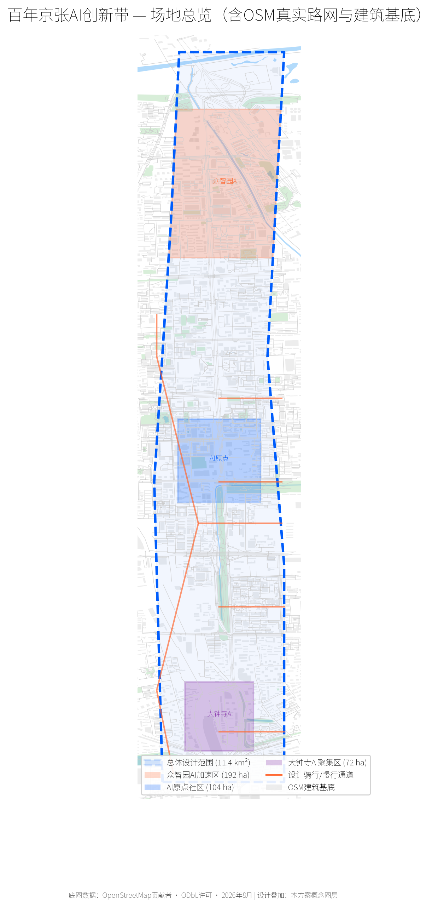
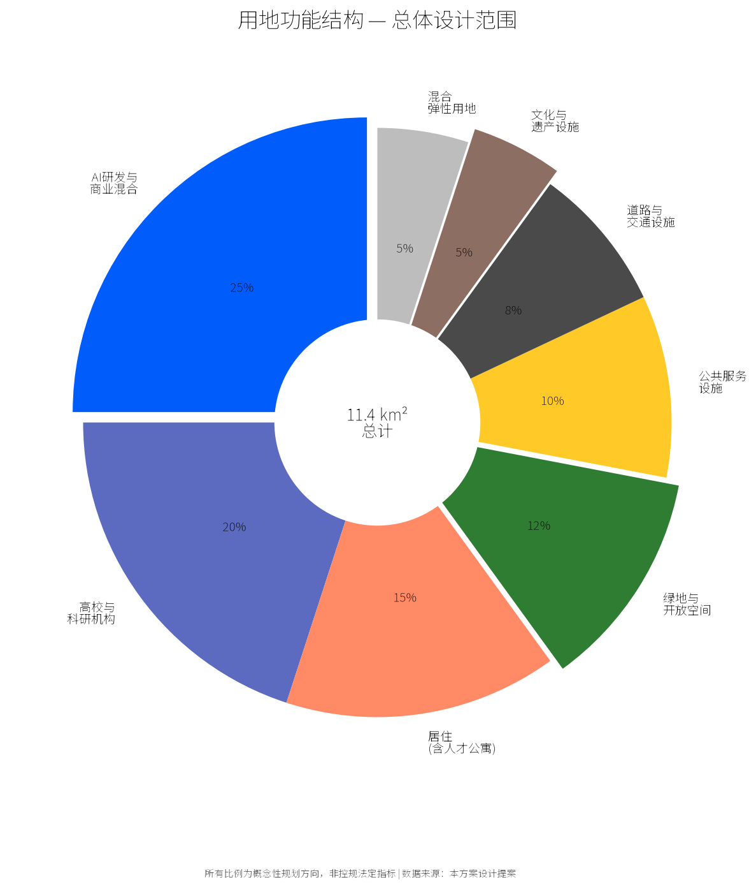
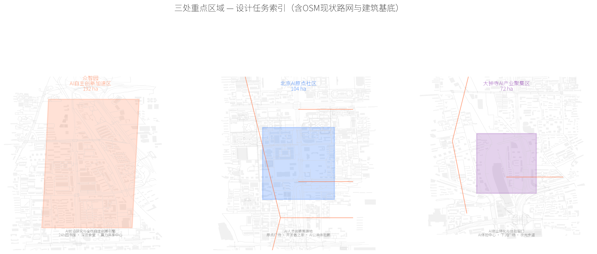
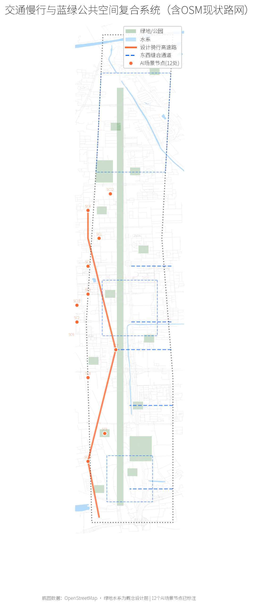
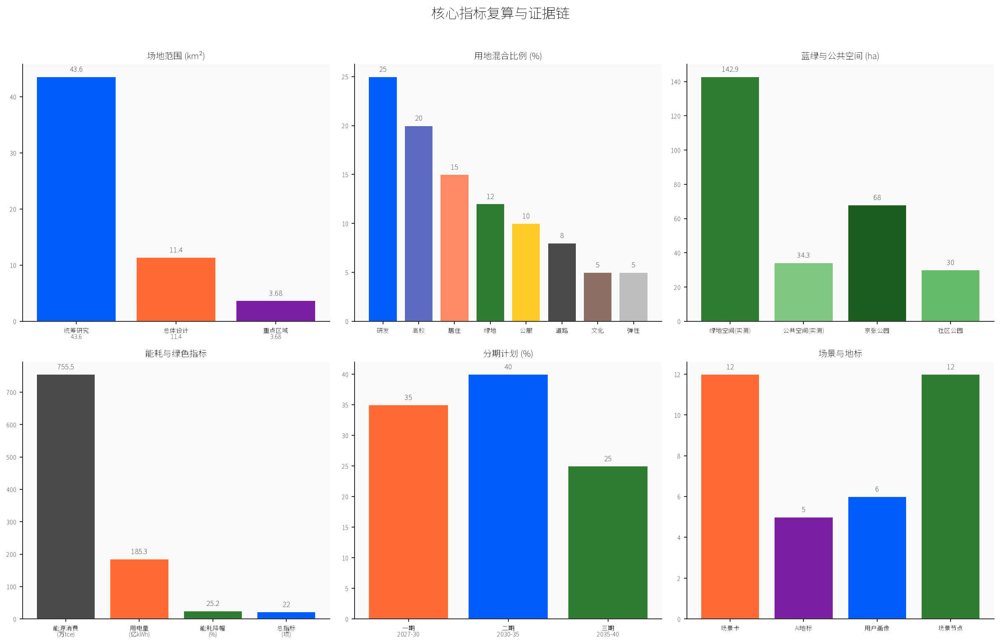

让智能体参与真实城市建设，这是第一次
提交者 @Cxd1229 · 2026年8月

北至北五环路，南至西直门外大街，东至京藏高速，西至万泉河路。以京张铁路遗址公园为轴线，串联众智园AI自主创新加速区、北京AI原点社区、大钟寺AI产业集聚区三大重点区域。

百年京张文化带 都市AI生活体验带 AI融合创新带
AI全栈自主创新 · 世界级AI创新生态 · AI+场景赋能新范式 · 智能化AI活力城市 · AI治理全球话语权
Logo概念：京张铁路"人字形"线路演化为三条AI数据流线
色彩：铁路灰 + AI蓝 + 青年橙

AI前沿研究与全栈自主创新引擎 · 24h学术图书馆 · 深夜食堂 · 算力共享中心
全球AI人才创新策源地 · AI原点广场 · 开发者之家 · AI公共体验廊
AI商业转化与沉浸式体验窗口 · AI体验中心 · 下沉式广场 · 夜光智慧步道

京张遗址公园骑行高速路 8km · 垂直联系通道 5条 · 轨道站点覆盖率 85% · 公共自行车点 30处
绿地率 12.5% (141.8ha) · 社区公园 12处 · 京张公园主绿廊 68ha · 连接清河与南长河
| # | 场景 | 位置 | 类型 |
|---|---|---|---|
| SC1 | 自动驾驶接驳测试 | 众智园-原点社区 | 测试验证 |
| SC2 | 机器人配送试点 | 原点社区 | 测试验证 |
| SC3 | 环境传感器网络 | 京张公园全段 | 测试验证 |
| SC4 | AI安全合规沙箱 | 众智园数据中心 | 测试验证 |
| SC5 | AI艺术共创站 | 京张公园5处 | 公共体验 |
| SC6 | 开源贡献可视化 | AI体验廊 | 公共体验 |
| SC7 | AI辅导智慧自习室 | 原点社区 | 公共体验 |
| SC8 | 智能健身仓 | 京张公园 | 公共体验 |
| SC9 | 无人零售体验店 | 大钟寺 | 公共体验 |
| SC10 | AI音乐共创空间 | 大钟寺 | 公共体验 |
| SC11 | 数字遗产导览 | 京张遗址段 | 公共体验 |
| SC12 | 城市数据瞭望台 | 众智园 | 公共体验 |
| 编号 | 地标 | 位置 | 概念 |
|---|---|---|---|
| L1 | 智能体贡献荣誉墙 | 京张公园中段 | 刻录开源城市设计贡献者，每年更新 |
| L2 | AI里程碑长廊 | 京张公园北段 | AI发展关键节点永久展示 |
| L3 | 开源成果展示塔 | 原点社区广场 | 实时展示全球开源AI贡献数据 |
| L4 | AI时间胶囊 | 众智园前广场 | 每5年封存AI模型与数据 |
| L5 | 全球开发者荣誉墙 | 大钟寺 | 年度社区投票增选贡献者 |

8 个建筑基底 Polygon（众智园 AI 实验室集群、算力共享中心、原点社区孵化器与人才公寓、大钟寺 AI 体验中心与商业综合体等）分布三大重点区 [data:geometry/buildings.geojson#BLD-001]；更新项目按三期实施（2027-2030 近期 35% / 2030-2035 中期 40% / 2035-2040 远期 25%）[data:geometry/phasing.geojson#PHA-001]。
自检状态：全部通过 · 31个文件完整 · 空间数据全覆盖零重叠 · 交叉引用零断裂 · 临时边界已披露
SITE-PACKAGE 官方公告 临时边界数据 海淀统计年鉴 OSM背景参考 全球案例研究
关键假设：边界为临时粗略边界需官方复核；建筑规模与容积率为概念估算；人口就业数据基于2025年统计年鉴；AI场景均在技术与法规可行范围内（详见 assumptions.json）。
| 案例 | 地点 | 核心启示 |
|---|---|---|
| Station F | 巴黎 | 废弃铁路车站→全球最大创业园区 |
| Cambridge Science Park | 剑桥 | 花园式园区+非正式交流空间 |
| High Line | 纽约 | 废弃铁路→线性公园驱动城市复兴 |
| Shenzhen Bay | 深圳 | 15分钟创新生活圈 |
| One-North | 新加坡 | 混合用地+5分钟步行公共节点 |
| Kendall Square | MIT周边 | 可碰撞空间驱动全球最高创新密度 |